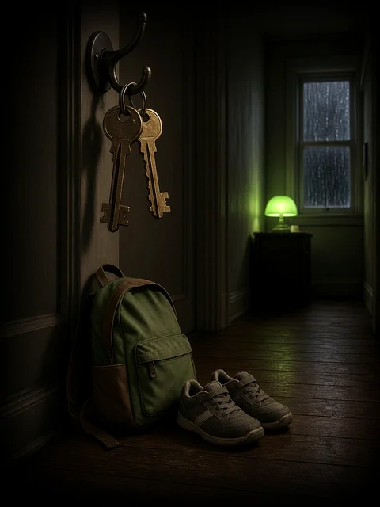

Caminho 01 Atendimento
Recebi uma medida protetiva
Intimação, restrições de contato e distância, filhos, casa e as primeiras providências e o que a decisão exige.
Rede de Proteção
Liberdade. Família. Patrimônio.
Uma enciclopédia prática, com o que fazer, passo a passo, antes do processo, em situações que envolvem sua liberdade, sua família e seu patrimônio. Leitura livre. Orientação jurídica presencial em Imperatriz-MA e online em todo o Brasil.
Qual é a sua situação?
Para lerA enciclopédia prática da Rede: o que fazer, passo a passo, em cada situação. Organizada pelo que aconteceu com você. Leitura livre, sem cadastro.

ArtigoA guarda é compartilhada. Ainda preciso pagar pensão?Compartilhada não quer dizer metade…Guarda compartilhada não é metade para cada um e não elimina a pensão. Entenda como as despesas do filho se dividem. ArtigoMeu voo foi cancelado. Quais são meus direitos?Hotel, comida e reembolso: quem responde…Reacomodação, reembolso, alimentação, hotel e overbooking: o que as regras da ANAC em vigor garantem a quem teve o voo cancelado e o que fazer no aeroporto.
ArtigoMeu voo foi cancelado. Quais são meus direitos?Hotel, comida e reembolso: quem responde…Reacomodação, reembolso, alimentação, hotel e overbooking: o que as regras da ANAC em vigor garantem a quem teve o voo cancelado e o que fazer no aeroporto. Para ser atendido
Os artigos acima ajudam a entender. Aqui estão as frentes em que o advogado atende: cada caminho tem uma página que explica como a conversa acontece. Cada caso é analisado individualmente, sem promessa de resultado.
Ver as três etapas em detalhe Prefere explicar direto? WhatsApp
Caminho 01 Atendimento
Intimação, restrições de contato e distância, filhos, casa e as primeiras providências e o que a decisão exige.
Caminho 02 Atendimento
Defesa técnica, sob sigilo. Intimação para depor, acusação, busca e apreensão ou inquérito aberto: o que significa cada momento e como o atendimento é conduzido.
Caminho 03 Atendimento
O que a Lei Maria da Penha prevê sobre posse e porte, entrega ou apreensão de arma, e como organizar a documentação.
Caminho 04 Atendimento
Separação, união estável, convivência com filhos, pensão alimentícia e divisão de bens — orientação objetiva.
Caminho 05 Atendimento
Cancelamento, atraso, overbooking, mala extraviada ou danificada: o que registrar e quais caminhos a regulamentação contempla.
Material para estudar
Conteúdo editorial, separado do atendimento. Guias em e-book sobre medida protetiva, CAC e Direito de Família, em linguagem acessível. Em breve, o Guia do Passageiro nacional e internacional.

Responsável pela Rede de Proteção
Lucas Brito Ladeia, advogado inscrito na OAB/MA sob o nº 16.091, com atuação desde 2016. Atendimento presencial em Imperatriz-MA e online para pessoas em todo o Brasil.
Cada caso é analisado individualmente, com exposição dos riscos e das possibilidades, sem promessa de resultado.
Ver canais de contatoJornada
Três etapas simples. Cada caso é analisado individualmente; ninguém pode garantir resultado.
Você escolhe a área e envia uma mensagem pelo WhatsApp, ou usa a página do problema. Informe o essencial e se há prazo ou audiência.
O advogado analisa a decisão, os documentos disponíveis e as restrições aplicáveis, e explica o que cada ponto significa na prática.
Indicação das providências possíveis, dos riscos relevantes e da forma de contratação, se houver interesse mútuo em seguir.
Dúvidas frequentes
Contato
Indique a área (medida protetiva, CAC, família ou passageiro). A triagem pede só o necessário para a primeira orientação.